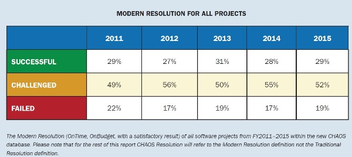
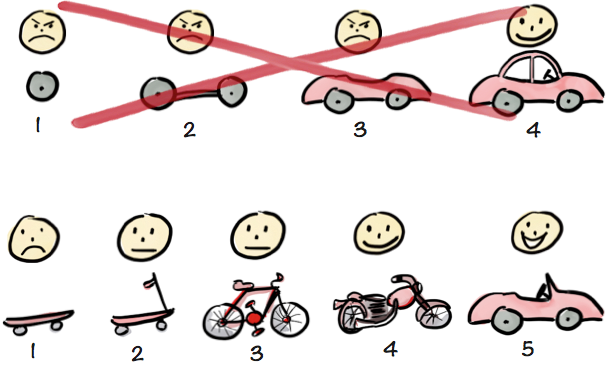
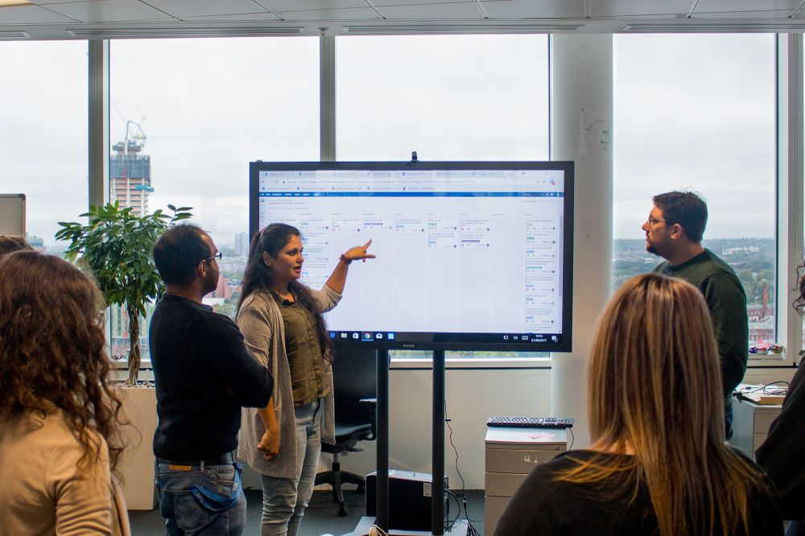
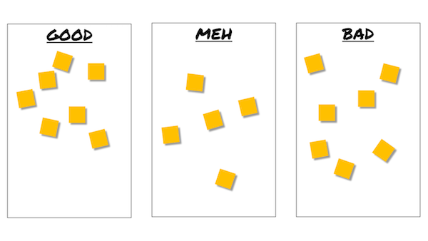

# Méthodes agiles <br> ## "Quelques conseils pour ne pas trop planter votre projet d'info" <br> <br> #### Mines Paristech #### 12 / 02 / 2021
## Daniel Garnier-Moiroux <img src="images/profile_picture.jpeg" id="profile-pic"> <br> Software Engineer @ VMware [@Kehrlann](https://twitter.com/Kehrlann) https://github.com/Kehrlann daniel@garnier.wf
## Aujourd'hui, du logiciel partout
## Plan 1. Introduction 2. Historique des projets logiciels et des méthodos 3. Exercice / discussion 4. Les méthodes "agiles" 5. Quelques exemples de Méthodes Agiles™ 6. Exercice / discussion
# Historique des projets software
## "Software crisis" <br> > The major cause of the software crisis is that the machines have become several orders of magnitude more powerful! To put it quite bluntly: as long as there were no machines, programming was no problem at all; when we had a few weak computers, programming became a mild problem, and now we have gigantic computers, programming has become an equally gigantic problem. > > — Edsger Dijkstra, The Humble Programmer (EWD340), Communications of the ACM (1972)
## Quelques statistiques A votre avis, combien de projets logiciels sont: - Des réussites ? - Des échecs complets ?
## Standish Group "Chaos Report" 
## Quelques statistiques - Coût de développement = moitié du coût opération + maintenance - 50% des projets sont opérationnels, mais pas "réussis" - Projet moyen: +50% de budget
## IBM System/360 > Ajouter des développeurs à un projet en retard aggrave le retard > > Fred Brooks, "The Mythical Man-Month", 1975
# Historique des méthodologies
## 1960s "software engineering" <img src="images/margaret-hamilton.jpg" height="900px">
## 1970: "Managing the development of large software systems" Article publié par Winston W. Royce, directeur de "Lockheed Software Technology Center"
> I believe in this concept but the implemention described above is risky and invites failure. > > Winston W. Royce
## Une variation: le cycle en V <img src="images/v-model.jpg" height="900px">
# EXERCICE
## Un avant projet d'élève > Il s'agirait d'un jeu vidéo de type RPG (Role Playing Game) > Entre autre, je compte prévoir: > > - un système de sauvegarde de l'aventure, cela me ferait utiliser les écritures et lectures de fichiers. > - différentes interfaces graphiques, pour la répartition des points gagnés lorsque le personnage monte d'un niveau, ou pour lancer des sorts, car j'aimerais que le joueur puisse dessiner des incantations pour pouvoir les lancer, et que l'algorithme les reconnaisse. > - la gestion de différents métiers, de différentes ressources dans le jeu > - des combats au tour par tour contre l'ordinateur
# Les méthodes "agiles"
- Scrum (1995) - eXtreme Programming (XP) Explained, _Embrace Change_ (1999) - Manifeste Agile (2001) - The Lean Startup (2011)
## https://agilemanifesto.org
## Leçon #1 # Business value - Un programme pour votre "client" - Qui lui sert à quelque chose
## Leçon #2 # Itérations - Un programme qui fonctionne - Au moins une fois par semaine

# Méthodes particulières
- Scrum - Kanban - eXtreme Programming - SAFe / Scrum@scale / Large-Scale Scrum - ...
## L'industrie de l'agilité - Plein de gens ont des choses à vendre (cours, ateliers, certifications, ...) - Une industrie en soi, avec du marketing
# Quels risques dans les projets de 1A ?
## Retour à notre avant projet > Il s'agirait d'un jeu vidéo de type RPG (Role Playing Game) > Entre autre, je compte prévoir: > > - un système de sauvegarde de l'aventure, cela me ferait utiliser les écritures et lectures de fichiers. > - différentes interfaces graphiques, pour la répartition des points gagnés lorsque le personnage monte d'un niveau, ou pour lancer des sorts, car j'aimerais que le joueur puisse dessiner des incantations pour pouvoir les lancer, et que l'algorithme les reconnaisse. > - la gestion de différents métiers, de différentes ressources dans le jeu > - des combats au tour par tour contre l'ordinateur
# Annexes

